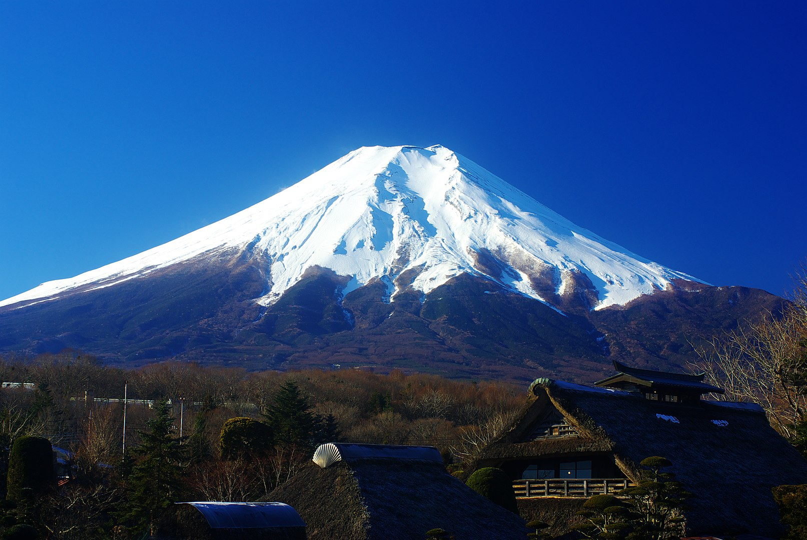
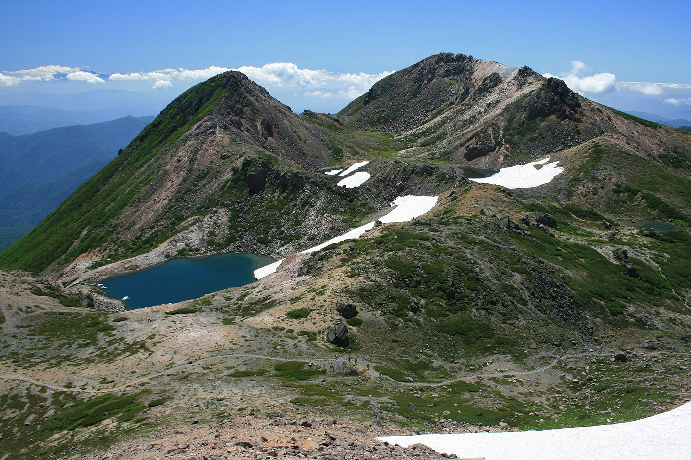

Fujisan
Mount Fuji (富士山, Fujisan) located on the island of Honshū, about 100 km southwest of Tokyo, is the highest mountain in Japan.
- Etymology
- History
- Geography
- Geology

Hakusan
Mount Haku (白山, Hakusan) is a dormant stratovolcano in Japan. It is located on the borders of Gifu and Ishikawa, on the island of Honshu.
- Etymology
- History
- Geography
- Geology

Tateyama
Mount Tate (立山, Tateyama) is a mountain located in the southeastern area of Toyama. It is one of Japan's Three Holy Mountains (三霊山, Sanreizan).
- Etymology
- History
- Geography
- Geology